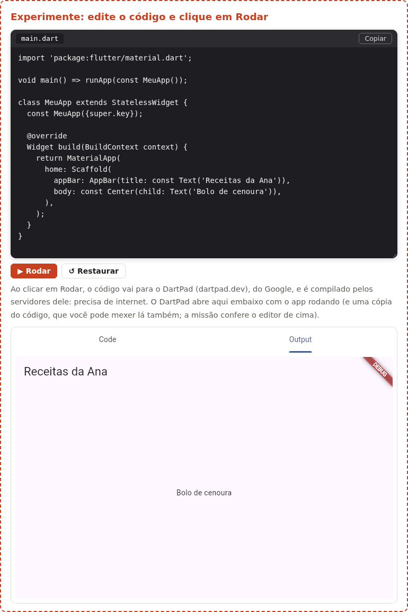
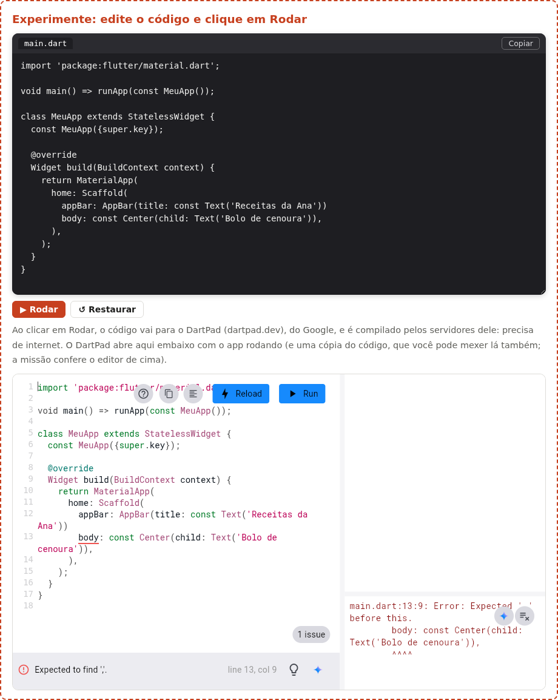

Flutter O Editor do Guia
Em toda aula deste guia aparecem caixas Experimente: você mexe no código de um app Flutter, clica em Rodar e vê, logo embaixo, a tela do app funcionando, com botões que respondem ao clique. Quem compila e roda o app é o Flutter de verdade: o DartPad (dartpad.dev), a ferramenta oficial do Google que também aparece na documentação do Flutter. Nesta página você conhece cada parte da caixa, entende o caminho que o seu código faz e sabe o que fazer quando algo não abre.
- As partes de uma caixa Experimente: o editor, Rodar, Restaurar, Ver solução, Copiar e a tela do DartPad.
- Para onde o seu código vai quando você clica em Rodar (e por que precisa de internet).
- Como funcionam as missões.
- Onde aparecem os erros de compilação.
- O que fazer quando o DartPad não abre.
A ideia: a oficina do lado da sala de aula
Pense numa escola de marcenaria. O professor explica no quadro como montar uma prateleira, mas a máquina de cortar madeira fica na oficina do lado. Você desenha a peça na sua mesa, leva o desenho até a oficina, e a máquina devolve a peça pronta.
A caixa Experimente funciona assim. A sua mesa é o editor do guia, onde você escreve o código. A oficina é o DartPad: ele recebe o código, compila com o Flutter de verdade e mostra o app rodando. Cada vez que você clica em Rodar:
- a caixa confere a missão (se a caixa tiver uma) no código que está no editor;
- o código é enviado para o DartPad, que abre dentro da própria caixa;
- os servidores do DartPad, do Google, compilam o app (alguns segundos);
- o app aparece no DartPad, funcionando: dá para clicar, rolar e digitar.
As partes da caixa
Experimente agora. A caixa abaixo tem um app pronto, o começo de um app de receitas. Clique em ▶ Rodar e espere a tela aparecer.
import 'package:flutter/material.dart';
void main() => runApp(const MeuApp());
class MeuApp extends StatelessWidget {
const MeuApp({super.key});
@override
Widget build(BuildContext context) {
return MaterialApp(
home: Scaffold(
appBar: AppBar(title: const Text('Receitas da Ana')),
body: const Center(child: Text('Bolo de cenoura')),
),
);
}
}
Depois do Rodar, a caixa fica como nesta foto (tirada num navegador de verdade, com o DartPad rodando o app acima):

- O editor (a aba
main.dart) - Onde você escreve. É sempre um app completo num arquivo só, o
lib/main.dartde um projeto Flutter: tem oimport, omaine os widgets. A tecla Tab coloca dois espaços (o recuo do Dart) e Ctrl+Enter é o mesmo que clicar em Rodar. - ▶ Rodar
- Confere a missão e manda o código para o DartPad, que compila e mostra o app. Mudou o código? Clique de novo: o DartPad recebe a versão nova e roda outra vez.
- ↺ Restaurar
- Volta o editor para o código original da aula. Use quando o código ficou bagunçado.
- Ver solução
- Só aparece nas missões. Mostra uma resposta possível; o botão Usar no editor copia essa resposta para o editor.
- Copiar
- Copia o código do editor, para você colar no seu projeto ou no
dartpad.devaberto em outra aba. - O DartPad (embaixo)
- É o DartPad oficial, encaixado na página. Ele guarda uma cópia do código que recebeu e mostra o app. Na largura desta página ele costuma aparecer com duas abas: Code (a cópia do código) e Output (o app, que já vem aberta); numa tela bem larga, as duas partes ficam lado a lado. Você pode mexer na cópia e usar os botões dele (Run roda de novo, Reload faz a recarga a quente), mas lembre: a missão confere o editor do guia, o de cima.
As missões
Muitas caixas trazem uma Missão: uma tarefa pequena, como trocar um texto ou acrescentar um widget. Quando você clica em Rodar, a caixa olha o seu código e diz se ele já tem o que a missão pede. Se tiver, aparece ✔ Missão cumprida!. Comentários (// …) não contam: um código comentado não cumpre missão.
Experimente: a missão abaixo pede para trocar o texto do meio da tela.
Missão: troque o texto 'Bolo de cenoura' por 'Torta de limão' e clique em Rodar.
import 'package:flutter/material.dart';
void main() => runApp(const MeuApp());
class MeuApp extends StatelessWidget {
const MeuApp({super.key});
@override
Widget build(BuildContext context) {
return MaterialApp(
home: Scaffold(
appBar: AppBar(title: const Text('Receitas da Ana')),
body: const Center(child: Text('Bolo de cenoura')),
),
);
}
}
import 'package:flutter/material.dart';
void main() => runApp(const MeuApp());
class MeuApp extends StatelessWidget {
const MeuApp({super.key});
@override
Widget build(BuildContext context) {
return MaterialApp(
home: Scaffold(
appBar: AppBar(title: const Text('Receitas da Ana')),
body: const Center(child: Text('Torta de limão')),
),
);
}
}
Quando dá errado
Um erro no código. Se o código tem um erro (faltou uma vírgula, um parêntese, um nome escrito errado), o DartPad não consegue compilar e não mostra o app. Por exemplo, tire a vírgula do fim da linha do appBar:
appBar: AppBar(title: const Text('Receitas da Ana'))
body: const Center(child: Text('Bolo de cenoura')),
Ao clicar em Rodar, o DartPad sublinha em vermelho o lugar do problema na cópia do código (o body, porque é ali que ele esperava a vírgula), mostra Expected to find ','. com a linha e a coluna (line 13, col 9) e, onde o app apareceria, a mensagem completa do compilador:
main.dart:13:9: Error: Expected ',' before this.
body: const Center(child: Text('Bolo de cenoura')),
^^^^

As mensagens saem em inglês, como no Flutter instalado no computador. Corrija no editor do guia (ou clique em ↺ Restaurar) e clique em Rodar de novo.
O DartPad não abre. Sem internet, numa rede que bloqueia o dartpad.dev (algumas escolas e empresas bloqueiam) ou com o serviço do Google fora do ar, a caixa espera 30 segundos e avisa: "O DartPad não respondeu…". O que fazer:
- confira a internet e clique em Rodar de novo (recarregue a página se preciso);
- clique em Copiar e cole o código em
dartpad.dev, aberto em outra aba; - ou rode no seu computador, com o Flutter instalado (aula Instalar o Flutter).
As aulas também trazem a foto de cada tela, tirada de um Flutter de verdade, para você acompanhar mesmo sem o DartPad.
O que o DartPad não faz
O DartPad roda o app dentro do navegador (como o Flutter para web). Então ele não tem:
| Recurso | No DartPad | Onde ver no guia |
|---|---|---|
Widgets, layout, temas, setState, navegação, animações, formulários | ✔ funcionam | nas caixas Experimente |
Vários arquivos (lib/telas/…), o pubspec.yaml | ✘ um arquivo só | no terminal da Ana, nas aulas de projeto |
| Pacotes do pub.dev | só uma lista fixa de pacotes populares que o DartPad já traz | no terminal da Ana (flutter pub add) |
| Câmera, GPS, notificações, arquivos do celular | ✘ | fotos e saídas do laboratório |
flutter create, flutter run, flutter doctor | ✘ (o DartPad não tem terminal) | no terminal da Ana |
Exercícios
Exercício 1
Na primeira caixa desta página, troque 'Receitas da Ana' pelo seu nome e clique em Rodar. O que mudou na tela?
Resposta
O título da barra do topo (o AppBar) passa a mostrar o seu nome. O texto do meio continua igual.
Exercício 2
Apague a vírgula do fim da linha do appBar e clique em Rodar. Onde aparece o erro? Depois clique em ↺ Restaurar.
Resposta
O DartPad não mostra o app: ele marca o erro na cópia do código e mostra a mensagem do compilador (em inglês). O ↺ Restaurar devolve o código original.
Exercício 3
A missão confere o editor do guia ou a cópia do código dentro do DartPad? Por quê?
Resposta
O editor do guia. O DartPad é outro site, e a página do guia não consegue ler o que está dentro dele.
Resumo
- Cada caixa Experimente tem um app completo num arquivo só (
main.dart). - ▶ Rodar (ou Ctrl+Enter) manda o código para o DartPad, que compila com o Flutter de verdade nos servidores do Google e mostra o app na caixa. Precisa de internet.
- ↺ Restaurar volta ao código da aula; Ver solução mostra uma resposta; Copiar copia o código.
- A missão confere o código do editor do guia: ✔ Missão cumprida! quando ele tem o que foi pedido.
- Erros de compilação aparecem no DartPad. Se o DartPad não abrir, use Copiar e o
dartpad.dev, ou o seu computador.